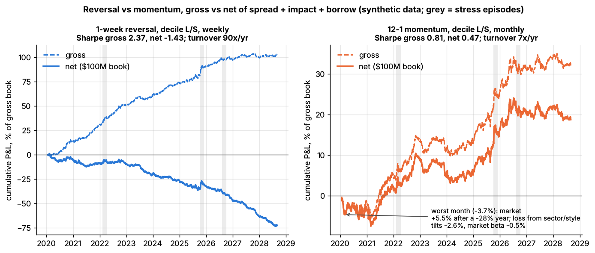
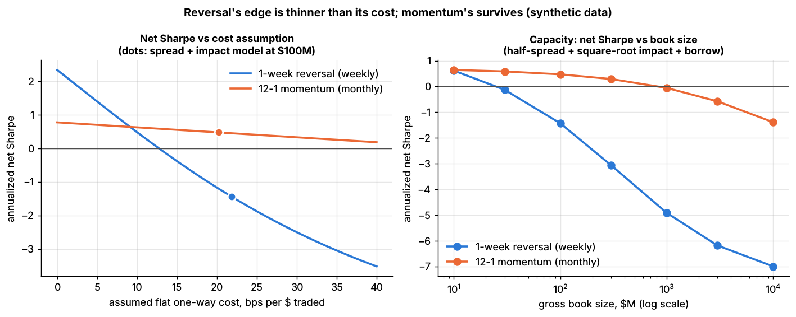

Momentum¶
TL;DR
- Buy the past year's winners, short its losers, skip the latest month ("12-1"). About 1% a month over 1965–1989 (Jegadeesh & Titman 1993), and it outlived publication.
- It appears across industries, countries and asset classes, negatively correlated with value, its natural partner (Asness, Moskowitz & Pedersen 2013).
- US long-run gross Sharpe is about 0.5 but only 0.14 since 2000, with the worst crashes of any major factor (−74% in July–August 1932, −49% in March–May 2009) when high-beta losers rebound.
- Crashes are partly predictable: volatility scaling roughly doubles the Sharpe (0.45 → 0.87 over 1927–2026, our replication).
- Low turnover (Lab 10: 6.5× a year against reversal's 90×) gives large capacity, with break-even estimates of $52B in the US. Crowding is the price.
Level: Core · Read time: ~11 min · Last verified: 2026-11
| Field | Value |
|---|---|
| Family | risk premia / factors |
| Edge source | behavioral · risk premium (contested) |
| Holding period | Monthly rebalance; positions last about 4 months [Estimate] (Lab 10 turnover) |
| Counterparty: who pays and why they accept it | Under-reacting investors who anchor on old prices, sell winners early, cling to losers and update slowly; if the risk story is right, also investors unwilling to carry momentum's crash exposure |
| Universe & instruments | Top 1,000–3,000 US stocks (also global stocks, industries, futures); long-short, or long-only indexes |
| Data required | Point-in-time total returns including delisted stocks; market caps; industry codes; factor residuals; daily returns; borrow |
| Core algorithms used | D3 Signal transforms · P1 Risk models · P7 Position sizing and risk budgeting · P5 Transaction cost and impact models |
| Infra intensity | Low: monthly batch; trades worked over days |
| Capacity (rough $ range) | Break-even $52B US, $89B global, $122B global optimized (Frazzini, Israel & Moskowitz 2012; AQR-affiliated, 1998–2011 costs) [Verified]; $5B+ liquidity-weighted at 1999 caps (Korajczyk & Sadka 2004) [Verified]. Per manager $1B–$20B [Estimate] (profit peaks near 4/9 of break-even; many managers share it) |
| Typical Sharpe (gross vs net) | Fama-French momentum factor (UMD), gross: 0.46 (1927–2026), 0.84 (1963–1991), 0.30 (1992–2026), 0.14 (2000–2026); volatility-scaled 0.87 and 0.41 (1927– and 2000–2026) [Verified] (our computation, French library). Net: subtract 0.05–0.15 for costs at moderate size [Estimate] |
| Turnover | 5–8× the gross book a year for a monthly decile book (Lab 10: 6.5×) [Estimate] |
| Main risks / failure modes | Crashes in rebounds after bear markets; junk rallies; abrupt leadership rotations; crowding |
| Crowding risk | High: standard in risk models, smart beta and quant books [Lore]; see comomentum |
| Firm types that run it | Systematic asset managers, style-premia funds, smart-beta providers, quant hedge funds; pods hedge it as risk |
| Lab | Lab 10 |
Intuition (the story in plain English)¶
News reaches prices in steps: an earnings beat, a guidance raise, analysts lifting estimates for months. A stock that has beaten the market for a year tends to keep beating it for a few months. Momentum buys that persistence across thousands of stocks and shorts its mirror image, skipping the latest month because one-month moves reverse (short-term reversal). The market prices a turnaround the way a board backs one: partially, then fully once several quarters confirm it.
Economic rationale: why should this make money at all?¶
| Story | Mechanism | Supporting evidence |
|---|---|---|
| Under-reaction | Information diffuses gradually; trend-chasers overshoot (Hong & Stein 1999) [Verified] |
Part of the first-year profit later reverses (Jegadeesh & Titman 1993, 2001) [Verified] |
| Overconfidence | Biased self-attribution creates short-lag momentum and long-lag reversal (Daniel, Hirshleifer & Subrahmanyam 1998) [Verified] |
The same later reversal |
| Rational risk | Time-varying expected growth rates produce momentum (Johnson 2002) [Verified] |
A common factor across eight markets and asset classes, partly funding liquidity risk (Asness et al. 2013) [Verified] |
| Crash premium | In panics, losers' option-like payoffs carry a high premium (Daniel & Moskowitz 2016) [Verified] |
UMD skewness −3.0 since 1927 (our computation) [Verified] |
The later reversal is what behavioral models predict, though Jegadeesh and Titman temper their support with caution [Verified]. Yet momentum co-moves across asset classes with very different investors, which one bias explains poorly. The evidence is mixed.
The trade, step by step¶
- Universe: point-in-time at month-end, including later-delisted names (D1).
- Score: return from 12 months ago to 1 month ago ("12-1").
- Clean (D3): winsorize; optionally rank within industry or on factor-model residuals (P1).
- Portfolio: long the top decile or 30%, short the bottom; hedge beta and industries.
- Size (P7): scale to a volatility target; cut further after bear markets (F6).
- Rebalance monthly with buffers (P6); trade over days (E2), netting against value.
Worked example with numbers¶
Illustrative crash mechanics: $1B long winners, $1B short losers, entering a rebound after a 30% market fall.
| Step | Calculation | Result |
|---|---|---|
| Long winners, beta 0.6 | $1B × 0.6 | +$0.6B market exposure |
| Short losers, beta 1.8 | −$1B × 1.8 | −$1.8B |
| Net market exposure | 0.6 − 1.8 | −$1.2B |
| Market rebounds 15% in a month | −$1.2B × 15% | −$180M |
| A normal month's expected premium | $1B × 0.6% | +$6M |
| Months of premium lost | 180 / 6 | 30 |
| Beta hedge: buy $1.2B of index futures | market term → 0 | industry and style tilts remain |
These betas are mild: after major declines Daniel and Moskowitz find loser betas above 3 and winner betas below 0.5 [Verified]. The 0.6% monthly premium matches UMD's long-run 7.3% a year.
Signals and algorithms under the hood¶
Residual momentum and the beta hedge need P1; volatility targeting is P7; costs come from P5.
# Mirrors Lab 10 (labs/10-reversal-momentum-costs/lab.py); vol scaling is an addition.
def momentum_signal(returns, lookback=252, skip=21):
"""12-1 momentum (Jegadeesh-Titman 1993): log return over days t-251 .. t-21."""
log_ret = np.log1p(returns)
return log_ret.rolling(lookback - skip).sum().shift(skip) # skip the reversal month
def decile_weights(signal, q=0.1):
"""Long top decile, short bottom decile, equal weight, +0.5 / -0.5 (gross 1)."""
rank = signal.rank(axis=1, pct=True)
top, bottom = rank > 1 - q, rank <= q
return top.div(top.sum(axis=1), axis=0) * 0.5 - bottom.div(bottom.sum(axis=1), axis=0) * 0.5
def beta_hedge(weights, beta):
"""Add an equal-weighted universe basket so the book's beta sum(w * beta) is zero."""
hedge = -weights.mul(beta, axis=1).sum(axis=1) / beta.mean()
return weights + np.outer(hedge, np.full(len(beta), 1.0 / len(beta)))
def vol_scale(book_daily_returns, target_vol=0.12, window=126):
"""Not in the lab: Barroso & Santa-Clara (2015) leverage, known before each month."""
realized = book_daily_returns.rolling(window).std() * np.sqrt(252)
return (target_vol / realized).shift(1)
# The lab rebalances the decile book every 21 trading days and charges apply_costs().

Right panel: momentum's net P&L (solid) stays close to gross (dashed); the arrow marks its worst month. Synthetic data.

Momentum (orange) stays positive up to 52.5 bps per dollar traded and to just under a $1B book. Synthetic data.
Synthetic lab result: at $100M the decile book's Sharpe is 0.81 gross and 0.47 net, with 6.5× turnover and costs of 1.3% of the book a year (reversal: 19.5%). Its worst month lost 3.7% as the market rose 5.5% after a −28% year; 2.6 points came from sector and style tilts, so the beta-hedged book still lost 3.2%. The constant planted IC and gentle simulated rebounds flatter the toy: real UMD has a Sharpe of 0.14 since 2000 and a −34% month.
Implementation choices that matter¶
- Lookback. 12-1 is standard. Novy-Marx (2012) finds returns from 12 to 7 months ago do most of the work
[Reported]. - Residual momentum. Ranking on factor-model residuals about doubles the risk-adjusted profit (Blitz, Huij & Martens 2011)
[Verified]: Sharpe 0.90 against 0.45, 1926–2009[Reported]. - Industry. Industry momentum accounts for much of stock momentum (Moskowitz & Grinblatt 1999)
[Verified]; industry-neutral books give it up to avoid sector concentration. - Crash management. Scaling to constant risk virtually eliminates crashes and nearly doubles the Sharpe (Barroso & Santa-Clara 2015)
[Verified], as do Daniel and Moskowitz's dynamic weights[Verified]. - Buffers and netting. Buy at the top decile but sell only below the top 20–30%
[Lore]. Netting momentum's trades against value's raises the pair's US break-even to $100B (Frazzini et al. 2012)[Verified]. - Shorts. Losers are more often hard to borrow; long-only indexes avoid this but are mostly market beta
[Lore].
P&L decomposition¶
Illustrative: $1B long, $1B short, volatility-scaled, one year.
| Line | $M | % of long side |
|---|---|---|
| Momentum premium, gross | +50 | +5.0 |
| Trading costs (6.5 × $2B traded × 10 bps) | −13 | −1.3 |
| Borrow (50 bps on $1B short) | −5 | −0.5 |
| Financing spread | −3 | −0.3 |
| Net, before fees | +29 | +2.9 |
With 15% volatility on the long side ($150M), the net Sharpe is about 0.19, comparable to UMD's 0.14 gross since 2000.
Evidence¶
Our computation from the French library (monthly, gross, no costs; volatility-scaled to 12% using the prior 126 days) [Verified]:
| Period | UMD Sharpe | Volatility-scaled | Worst month |
|---|---|---|---|
| 1927–1962 | 0.40 | 0.82 | −52.6% (August 1932) |
| 1963-07 to 1991 | 0.84 | 1.12 | −13.8% (January 1975) |
| 1992 to 2026-09 | 0.30 | 0.66 | −34.4% (April 2009) |
| 2010 to 2026-09 | 0.26 | 0.46 | −16.2% (January 2023) |
- Original result. Over 1965–1989, 6-month formation earned about 1% a month and 12-month/3-month 1.31%, despite losing about 7% each January (Jegadeesh & Titman 1993)
[Verified]. - After publication. Profits continued in the 1990s (Jegadeesh & Titman 2001)
[Verified]; UMD's 1990–1999 Sharpe was 1.21. - Everywhere. Value and momentum premia in eight markets and asset classes, negatively correlated (Asness et al. 2013)
[Verified]. UMD–HML correlation is −0.41 since 1927 (−0.19 since 1963); a 50/50 risk mix has a Sharpe of 0.73 against 0.46 and 0.34 alone[Verified]. - Bear-market state. In the 235 months after a negative trailing 24-month market excess return, UMD averaged −0.27% a month, against +0.84% otherwise
[Verified]. - Costs. Lesmond, Schill & Zhou (2004) call the profits illusory
[Reported]; live execution data put costs below a tenth of earlier estimates (Frazzini et al. 2012)[Verified]. - Recent years (monthly returns compounded). UMD: +20.2% (2022), −20.5% (2023, −16.2% in January), +18.5% (2024), −2.2% (2025), +11.0% (2026 to September)
[Verified].
Capacity, crowding and decay¶
Momentum's break-even ($52B US) is almost six times reversal's ($9B) because it trades far less (a fourteenth as much in Lab 10). Decay is real: the Sharpe fell from 0.84 before 1992 to 0.30 after, about the average post-publication loss across anomalies (factor fundamentals). Crowded momentum trading can push prices past fundamentals, and comomentum detects it (Lou & Polk 2022) [Verified]. See factor timing and crowding.
How it fails¶
- Rebound crashes. In July–August 1932 past losers returned 232% against winners' 32%; in March–May 2009, 163% against 8% (Daniel & Moskowitz, 1927–2013 sample)
[Verified]. UMD lost 74% and 49% in those windows[Verified]. - Rotations and junk rallies. January 2001 −25.4%; 9 November 2020 −14.4% in one day on vaccine news; January 2023 −16.2%
[Verified]. - Leadership reversal, 2026. UMD lost 17.9% from 22 June to 3 September 2026 (July −12.2%)
[Verified]as crowded AI winners reversed[Reported].
Textbook vs how it's done today¶
| Textbook | Practice today |
|---|---|
Equal-weighted 12-1 deciles, monthly (Jegadeesh & Titman 1993) [Verified] |
Risk-weighted, residual or industry-adjusted, buffered, optimized [Lore] |
| Static exposure | Volatility-scaled or crash-managed (Barroso & Santa-Clara 2015; Daniel & Moskowitz 2016) [Verified]; how widely firms do this is [Lore] |
| A standalone factor | Paired with value (Asness et al. 2013) [Verified]; pods neutralize it as risk [Lore] |
Variants and neighbours¶
- Time-series momentum (trend following) uses each asset's own past return. For stocks, the difference from cross-sectional momentum is mostly its time-varying net long position (Goyal & Jegadeesh 2018)
[Verified]. - Related signals: industry and residual momentum; factor momentum (factor timing); earnings drift; analyst revisions; short-term momentum in high-turnover stocks (Medhat & Schmeling 2022)
[Verified]. - Hedge: value.
Diagram¶
flowchart LR
bear["Bear market"] --> sort["Winners are low-beta defensives<br/>losers are high-beta cyclicals"]
sort --> book["Book is net short beta<br/>and short beaten-down sectors"]
book --> reb["Market rebounds sharply"]
reb --> crash["Losers rally hardest<br/>momentum crash"]
vol["High realized volatility"] --> scale["Vol scaling cuts exposure"]
scale -. limits .-> crash
bear --> voltimeline
title Momentum, dated
1993 : Jegadeesh and Titman, 12-1 winners minus losers
1999 : Industry momentum
2001 : Profits persisted through the 1990s
2009 : Spring rebound crash, UMD minus 49 percent
2013 : Value and momentum everywhere
2016 : Momentum crashes paper
2023 : January junk rally, minus 16 percent
2026 : June to September, minus 18 percentHow practitioners talk about it¶
- "12-1 with the skip." → Formation excludes the latest month.
- "Momentum is short beta after a bear market." → The crash setup.
- "We vol-scale the momentum sleeve." → Barroso–Santa-Clara.
- "Value and momentum pay for each other's bad years." → Negative correlation.
- "That was a junk rally." → Low-quality losers squeezed higher.
- "Comomentum is spiking." → Momentum names move together; crowded.
- "Raw momentum is an AI-beta book." → Sector concentration.
Myths vs reality¶
| Myth | Reality |
|---|---|
| Momentum is trend following | Cross-sectional is relative and dollar-neutral; trend is net long or short |
| It was arbitraged away after 1993 | Sharpe 1.21 in the 1990s; weaker since 2000 |
| Crashes are random | Partly predictable: after bear markets, in high volatility |
| Too costly to trade | Contested: Lesmond et al. versus Frazzini et al. |
Questions you could ask a quant about this¶
Basic
- Which lookback and skip do you use?
- Is the book industry-neutral?
Informed
- How do you size momentum after a bear market?
- Do you combine with value in the signal or the portfolio?
- How much turnover do your buffers save?
Sharp
- Your momentum sleeve's loss in July 2026 versus UMD? 🔒
- How do you measure crowding in your names? 🔒
- Realized versus modeled cost per dollar? 🔒
Go deeper¶
Math: the 12-1 score, crash beta and volatility scaling
12-1 score for holding month \(t\) (French: months \(t-12\) to \(t-2\); Lab 10: days \(t-251\) to \(t-21\)):
The book's beta is the difference of its legs' betas:
After a decline, \(\beta_{L,t}\) can exceed 3 and \(\beta_{W,t}\) fall below 0.5, so a rebound \(R_m\) costs about \(|\beta_{WML,t}| R_m\) with \(|\beta_{WML,t}| > 2\).
Volatility scaling with target \(\sigma^{*}\) and 126 prior daily returns:
Volatility spikes before crashes, so \(w_t\) falls first: in our replication leverage was 0.3× in spring 2009, and the loss was 16% instead of 49%.
Related pages¶
- Short-term cross-sectional reversal
- Factor investing fundamentals
- Value, quality and low volatility
- Trend following and CTAs
- Position sizing and risk budgeting (P7)
- Strategy failure gallery
Sources¶
- [Verified] Jegadeesh, N. & Titman, S. (1993). "Returns to Buying Winners and Selling Losers: Implications for Stock Market Efficiency." Journal of Finance 48(1), 65–91. https://doi.org/10.1111/j.1540-6261.1993.tb04702.x (accessed 2026-11)
- [Verified] Jegadeesh, N. & Titman, S. (2001). "Profitability of Momentum Strategies: An Evaluation of Alternative Explanations." Journal of Finance 56(2), 699–720. https://doi.org/10.1111/0022-1082.00342 (accessed 2026-11)
- [Verified] Asness, C. S., Moskowitz, T. J. & Pedersen, L. H. (2013). "Value and Momentum Everywhere." Journal of Finance 68(3), 929–985. https://doi.org/10.1111/jofi.12021 (accessed 2026-11)
- [Verified] Daniel, K. & Moskowitz, T. J. (2016). "Momentum Crashes." Journal of Financial Economics 122(2), 221–247. https://doi.org/10.1016/j.jfineco.2015.12.002 (accessed 2026-11)
- [Verified] Daniel, K. & Moskowitz, T. J. (2014). "Momentum Crashes." NBER Working Paper 20439 (crash magnitudes and betas quoted from this version). https://www.nber.org/papers/w20439 (accessed 2026-11)
- [Verified] Moskowitz, T. J. & Grinblatt, M. (1999). "Do Industries Explain Momentum?" Journal of Finance 54(4), 1249–1290. https://doi.org/10.1111/0022-1082.00146 (accessed 2026-11)
- [Verified] Barroso, P. & Santa-Clara, P. (2015). "Momentum has its moments." Journal of Financial Economics 116(1), 111–120. https://doi.org/10.1016/j.jfineco.2014.11.010 (accessed 2026-11)
- [Verified] Blitz, D., Huij, J. & Martens, M. (2011). "Residual momentum." Journal of Empirical Finance 18(3), 506–521. https://doi.org/10.1016/j.jempfin.2011.01.003 (accessed 2026-11)
- [Reported] Novy-Marx, R. (2012). "Is momentum really momentum?" Journal of Financial Economics 103(3), 429–453. https://doi.org/10.1016/j.jfineco.2011.05.003 (accessed 2026-11)
- [Verified] Hong, H. & Stein, J. C. (1999). "A Unified Theory of Underreaction, Momentum Trading, and Overreaction in Asset Markets." Journal of Finance 54(6), 2143–2184. https://doi.org/10.1111/0022-1082.00184 (accessed 2026-11)
- [Verified] Daniel, K., Hirshleifer, D. & Subrahmanyam, A. (1998). "Investor Psychology and Security Market Under- and Overreactions." Journal of Finance 53(6), 1839–1885. https://doi.org/10.1111/0022-1082.00077 (accessed 2026-11)
- [Verified] Johnson, T. C. (2002). "Rational Momentum Effects." Journal of Finance 57(2), 585–608. https://doi.org/10.1111/1540-6261.00435 (accessed 2026-11)
- [Verified] Goyal, A. & Jegadeesh, N. (2018). "Cross-Sectional and Time-Series Tests of Return Predictability: What Is the Difference?" Review of Financial Studies 31(5), 1784–1824. https://doi.org/10.1093/rfs/hhx131 (accessed 2026-11)
- [Verified] Korajczyk, R. A. & Sadka, R. (2004). "Are Momentum Profits Robust to Trading Costs?" Journal of Finance 59(3), 1039–1082. https://doi.org/10.1111/j.1540-6261.2004.00656.x (accessed 2026-11)
- [Reported] Lesmond, D. A., Schill, M. J. & Zhou, C. (2004). "The illusory nature of momentum profits." Journal of Financial Economics 71(2), 349–380. https://doi.org/10.1016/S0304-405X(03)00206-X (accessed 2026-11)
- [Verified] Frazzini, A., Israel, R. & Moskowitz, T. J. (2012). "Trading Costs of Asset Pricing Anomalies." Working paper, draft of 2012-12-05 (authors affiliated with AQR). https://conference.nber.org/conf_papers/f68262/f68262.pdf (accessed 2026-11)
- [Verified] Lou, D. & Polk, C. (2022). "Comomentum: Inferring Arbitrage Activity from Return Correlations." Review of Financial Studies 35(7), 3272–3302. https://doi.org/10.1093/rfs/hhab117 (accessed 2026-11)
- [Verified] Medhat, M. & Schmeling, M. (2022). "Short-term Momentum." Review of Financial Studies 35(3), 1480–1526. https://doi.org/10.1093/rfs/hhab055 (accessed 2026-11)
- [Reported] Hedgeweek (2026-07-10). "AI-led market reversal hits quant hedge funds as crowded trades unravel." https://www.hedgeweek.com/ai-led-market-reversal-hits-quant-hedge-funds-as-crowded-trades-unravel/ (accessed 2026-11)
- [Verified] French, K. R. "Data Library: Momentum Factor (monthly and daily) and Fama/French 3 Factors," through 2026-09 (Sharpe ratios, volatility scaling, correlations, drawdowns and episode returns are our computations). https://mba.tuck.dartmouth.edu/pages/faculty/ken.french/data_library.html (accessed 2026-11)